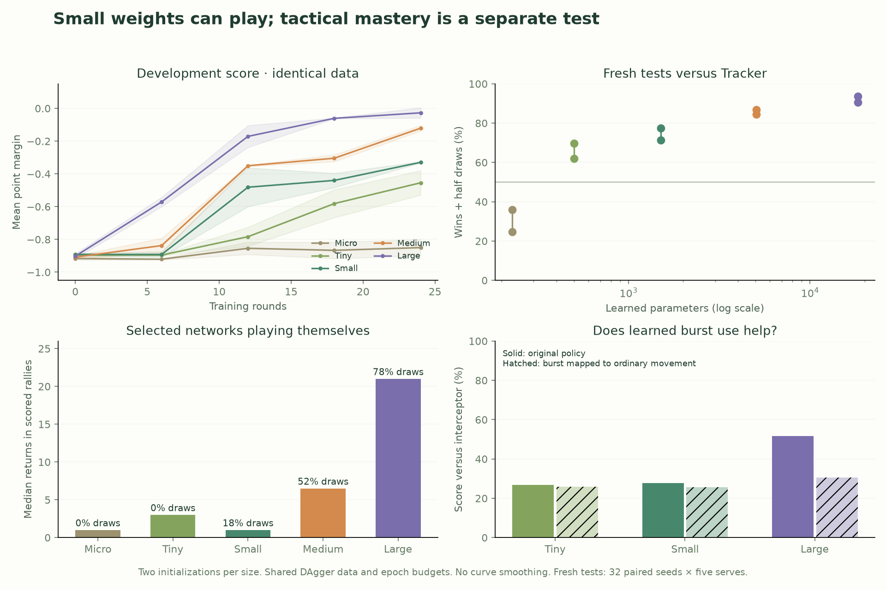
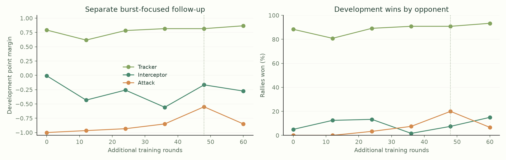

Historical study
Commands below refer to archived research sources, some retained only in the local experiment archive. They are not the maintained training workflow. Current play uses Classic v4.
PONGARENA / MODEL SIZE STUDY
How small can
a paddle be?
Burst prototype · bounded training experiment · two initialization seeds per size
Networks with 501 learned parameters can already beat a simple ball-following paddle. Larger networks improve prediction and survival. This experiment does not demonstrate tactical mastery: every selected network still loses every held-out rally to the resource-aware attacking teacher.
Same data, different capacity
Five plain Tanh architectures, each trained from two initializations. Every actor received the same 983,040 labels, exact minibatch orders and four epochs per round, over 24 rounds. The shared data came from 393,216 environment steps in pooled DAgger, both player perspectives, plus broad synthetic observations. Synthetic inputs are not claimed reachable. Geometric teacher calculations exist only in training; the exported networks have eight raw inputs and five action scores.
Weights were selected on eight development seeds, then frozen before 32 new paired test seeds. Training budgets are equal in examples and optimization passes, not FLOPs: larger models do more arithmetic. This is the smallest useful size demonstrated by this particular recipe, not a proof of the minimum possible network.

Development bands span the two initializations. Mirror lengths include scored rallies only; draw rates are shown separately. Score is wins plus half draws. Numerical diagnostics do not establish subjective human enjoyment.
Frozen selected weights
Each row is 320 rallies: 32 seeds, five serves, both side assignments. The table uses frozen PyTorch checkpoints in the verified vector environment. Native ONNX and browser replay checks are separate. All use prototype configuration burst96-cost8-half.
| Network | Parameters | Architecture | Tracker W / L / D | Attacker W / L / D | Mirror median returns | Mirror draws |
|---|
| Micro ↓ (retired) | 229 | 8 → 16 → 5 | 115 / 205 / 0 | 0 / 320 / 0 | 1 | 0.0% |
| Tiny ↓ (retired) | 501 | 8 → 16 → 16 → 5 | 223 / 97 / 0 | 0 / 320 / 0 | 3 | 0.0% |
| Small ↓ (retired) | 1,509 | 8 → 32 → 32 → 5 | 228 / 92 / 0 | 0 / 320 / 0 | 1 | 18.1% |
| Medium ↓ (retired) | 5,061 | 8 → 64 → 64 → 5 | 270 / 50 / 0 | 0 / 320 / 0 | 6.5 | 52.5% |
| Large ↓ (retired) | 18,309 | 8 → 128 → 128 → 5 | 298 / 19 / 3 | 0 / 320 / 0 | 21 | 78.1% |
229 parameters: weak in this run, often missing early returns. 501–1,509: a plausible beginner-opponent range, with clear weaknesses. 5,061–18,309: better survival, but high mirror draw rates and continued losses to attacking scripts. Model size alone is not a difficulty level, and longer rallies do not prove better attacking tactics.
All models use fully learned weights. They require the burst contract, observation[1,8] and action_scores[1,5]; they are not compatible with the older six-input/three-output Pong files. These are provisional game rules, not a permanently frozen competition season.
Size versus size
All checkpoints were chosen before these tests. Rows are from the first model's perspective. These results describe this fixed opponent pool, not a universal ordering across every possible uploaded policy.
| Pair | Wins / losses / draws | Median decisive returns |
|---|
| Micro Vs Tiny | 82 / 238 / 0 | 1.0 |
| Micro Vs Small | 72 / 248 / 0 | 1.0 |
| Micro Vs Medium | 30 / 290 / 0 | 1.0 |
| Micro Vs Large | 11 / 309 / 0 | 2.0 |
| Tiny Vs Small | 101 / 219 / 0 | 5.0 |
| Tiny Vs Medium | 41 / 271 / 8 | 9.0 |
| Tiny Vs Large | 11 / 296 / 13 | 13.0 |
| Small Vs Medium | 69 / 167 / 84 | 6.5 |
| Small Vs Large | 16 / 219 / 85 | 13.0 |
| Medium Vs Large | 28 / 189 / 103 | 20.0 |
Can they learn the resource tactic?
The current evidence is limited. Mapping learned burst actions to ordinary movement measures whether those actions help match outcomes. Changing an energy input and observing a changed action merely shows sensitivity; it is not proof that the new action is useful. Both results are retained in the raw data.
The greedy training teacher has weak opponent-energy dependence: at a fixed outgoing speed, some energy-dependent reach terms subtract the same value from every candidate shot. It does not provide a reliable multi-exchange planning target. Larger networks can learn some burst timing, but this first size screen has not taught the full pressure → depleted recovery → finishing-shot tactic. A separate bounded follow-up investigates rare reachable burst decisions without changing this comparison.
A separate test: learning to use burst
One bounded follow-up continued the 18,309-parameter Large model for 60 additional rounds. Actual reachable game states where the teacher requested burst were oversampled. The selected checkpoint was round 48, chosen on a new development block; final tests used another 32 fresh seeds. This has a larger training budget and is deliberately excluded from the five-size comparison.

Learned burst use now has a measurable benefit. Focus wins 44 rallies against the attacker where the original Large wins none on the same seeds. Disabling Focus's burst actions removes all 44 wins. It remains much weaker than the attacker, and loses badly to the original Large and to the safer defender. This is a different specialist, not a universally stronger replacement.
| Same fresh test seeds | Wins / losses / draws |
|---|
| Focus vs attacker | 44 / 255 / 21 |
| Original Large vs attacker | 0 / 320 / 0 |
| Focus with burst disabled vs attacker | 0 / 320 / 0 |
| Focus vs original Large | 25 / 197 / 98 |
| Focus vs safer defender | 0 / 217 / 103 |
| Original Large vs safer defender | 0 / 49 / 271 |
On the rule study's exact final-shot scenario, Focus catches the ball when given a full energy meter; all five original size-study models miss it. With the recorded depleted meter, the shot is mathematically unreachable and Focus also misses. This supports learned rescue timing. It still fails to choose the earlier placement counter that can avoid the trap, so the complete multi-exchange tactic remains unlearned.
Focus weights ↓ (retired) · Same plain 8→128→128→5 Tanh architecture · Complete native replay fixtures
Reproduce and inspect
The complete protocol, all ten checkpoint selections, raw curves, test outcomes, model hashes and native parity probes are retained under training/results/burst-study/models/. Training games use seeds below one billion; development uses [2.81,2.82) billion, final tests [2.9,3.0) billion, and native replay fixtures use separate seeds above 3.01 billion. These final tests are consumed; future tuning needs new reserved seeds.
.venv/bin/python training/scripts/train_size_study.py --help
.venv/bin/python training/scripts/report_size_study.py
.venv/bin/python training/scripts/verify_size_models.py
The trained exports pass numeric parity on 23,376 observations with no action disagreements. Six full native ONNX matches are available for browser verification. The training method, limitations and exact reproduction commands are in the retained models README.